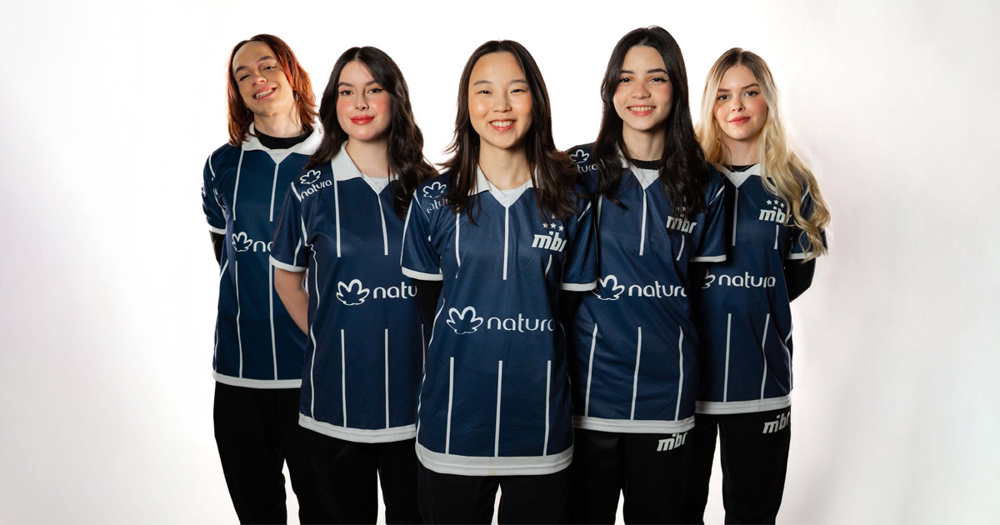
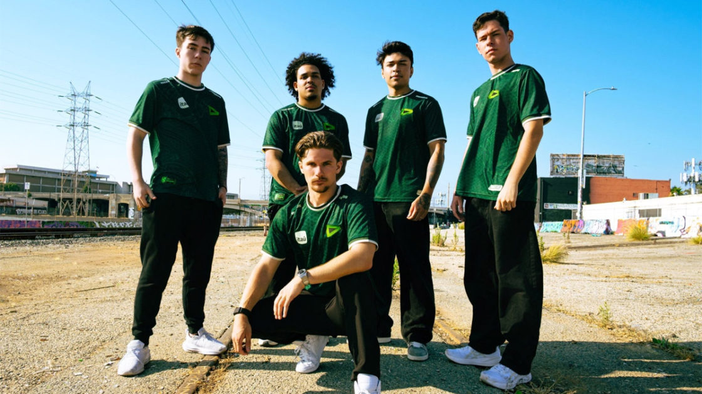
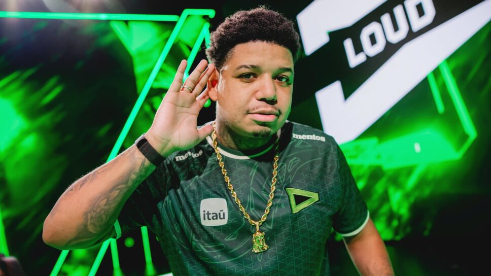

Nova Lineup inclusiva da MIBR
postado 23 de Junho de 2025

Nesta segunda-feira (23), o MIBR revelou sua nova line-up inclusiva de VALORANT para o restante da temporada 2025.
A equipe chega reformulada, apostando em nomes de peso do cenário competitivo: bstrdd, vinda da Team Liquid, e Lissa, ex-LOUD.
Outra novidade é a volta de Sayuri ao time principal, desta vez liderando o elenco dentro do servidor como IGL.
Fonte: ValorantZone
Novo time da Loud
postado 24 de Junho de 2025

Confira os novos nomes que chegam à LOUD!
A equipe se reforça para o segundo split do VCT Américas 2025 com duas adições internacionais de peso.
Virtyy, um duelista com passagens marcantes por FUSION, Oxygen Academy e E-Xolos LAZER, já é conhecido no
cenário LATAM. Ele revelou que entende bem o português e está confiante para se adaptar rapidamente à comunicação da equipe.
RobbieBk chega com bagagem como IGL da Gentle Mates, onde atuou até março deste ano na região EMEA.
Com histórico por equipes de Portugal, Itália, Finlândia e Reino Unido, essa será a sua primeira experiência jogando fora da Europa.
Fonte: Mais Esports
Diretoria o novo time de Dgzin
postado 22 de Maio de 2025

Nova equipe chega para disputar a segunda etapa do VCB 2025 de VALORANT: a DIRETORIA.
A organização assume o lugar da antiga Vila do Zana e promete agitar o cenário com um elenco experiente, composto por nomes que já passaram pelo VCT Americas nos últimos anos.
Do elenco anterior, kon4n segue como capitão, enquanto os reforços incluem dgzin, havoc, raafa e PxS, todos com passagens recentes por equipes de destaque no cenário, como FURIA, LOUD e 2Game.
Fonte: Mais Esports